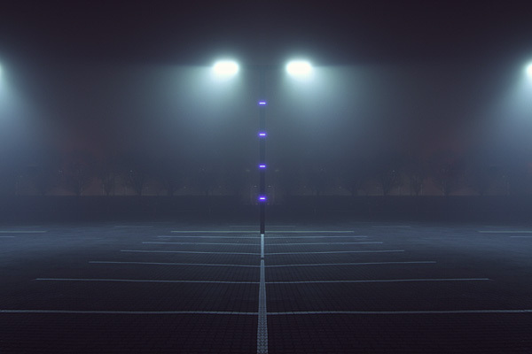
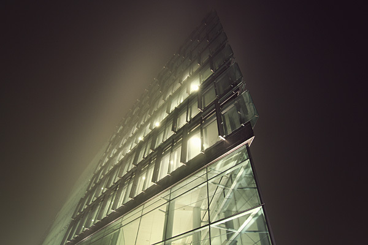
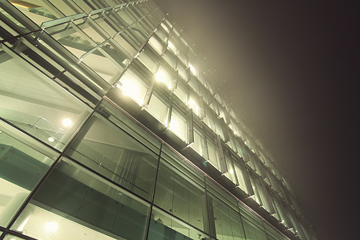

Majestics
I’ve posted about photographer Kim Høltermand in the past for the Deserted City, but his work still continues to amaze me with his latest series Majestics. The foggy ambiance he captures adds an eerie and serene mood to all of his work.
Follow along with this week’s curated posts featuring some of my favorites from the Behance Network - tagged: behance.